Троєщина
Київ, вул. Оноре де Бальзака, 85А
Неврологія, опорно-руховий апарат, кардіологія
Стаціонар з цілодобовим наглядом
- Графік
- Пн–Нд 8:00–21:00
- Телефон
- +38 068 238 20 22
Оздоровчо-реабілітаційний центр «Сосни» · Київ
Стаціонар із цілодобовим наглядом і амбулаторне лікування. Два центри — на Троєщині та Нивках, щодня з 8:00 до 21:00.
Ціни відкриті — дивіться ключові позиції прайсу. Звернутися можуть і родичі пацієнта.
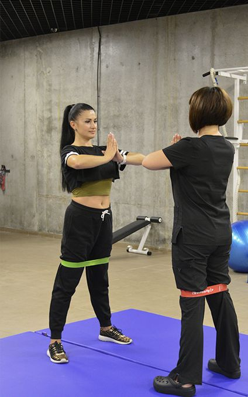
Як усе відбувається
Від першого дзвінка до супроводу після виписки — сім кроків. На кожному ви знаєте, що буде далі.
Розкажіть про ситуацію — підкажемо, з чого почати. Щодня з 8:00 до 21:00.
ЗателефонуватиЛікар оцінює стан і можливості відновлення. 1190–1290 грн.
ЗаписатисяСкладаємо план занять і процедур під ваш випадок.
У стаціонарі з цілодобовим наглядом або амбулаторно.
Завершення курсу в центрі.
Програми, що допомагають утримати результат.
Програма та консультації на постреабілітаційний період.
Що ми лікуємо
Оберіть свою ситуацію — покажемо, з чого почати, де приймають і скільки це коштує.
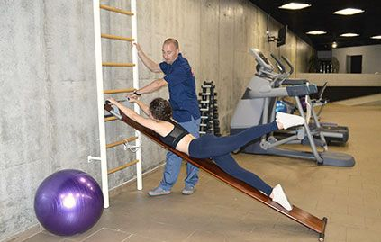
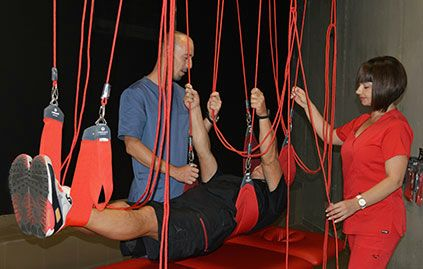
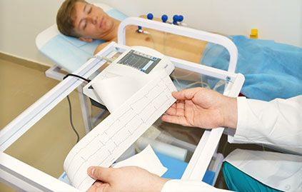
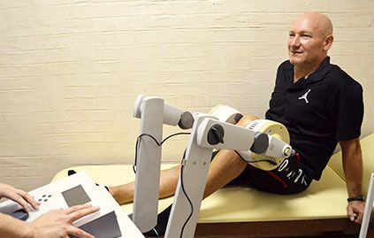
Для пацієнтів і їхніх родин
Коли після лікарні потрібні щоденні заняття й постійний медичний нагляд. Власне стаціонарне відділення — у філії на Троєщині, вул. Оноре де Бальзака, 85А.
Медичний нагляд за пацієнтом удень і вночі.
Заняття за індивідуальною програмою — щодня.
Дієтичне харчування під час перебування в стаціонарі.
Телефонувати можуть і родичі пацієнта. Консиліум з питань реабілітації та госпіталізації — 1990 грн.
Окрема програма
Для військових після поранень у центрі діє окремий реабілітаційний пакет. Як і для всіх пацієнтів, програму складають індивідуально після консультації в центрі.
Команда
11 фахівців: реабілітологи, ортопеди-травматологи, нейрохірург, невролог, кардіологи, хірург. Центр працює за мультидисциплінарним підходом.
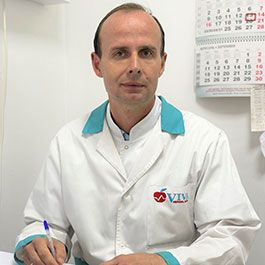
Ортопед-травматолог
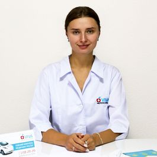
Невролог
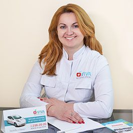
Кардіолог, терапевт
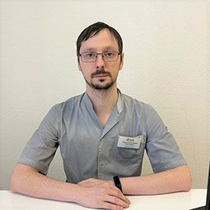
Реабілітолог
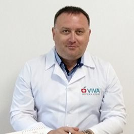
Ортопед-травматолог
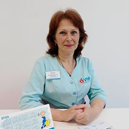
Реабілітолог, масажист
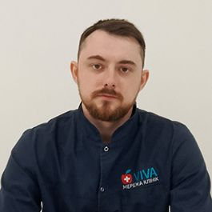
Ортопед-травматолог
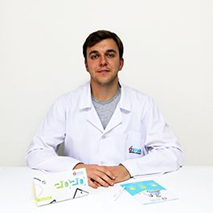
Реабілітолог, масажист
Усі лікарі та їхні профілі (Розділ у розробці)
Ціни без сюрпризів
Ключові позиції прайсу центру. Точну вартість курсу лікар називає після консультації — вона залежить від програми.
| Послуга | Ціна |
|---|---|
| Консультація лікаря центрузавідуючого, головного лікаря | 1290 грн |
| Консультація профільного спеціалістаневропатолог, ортопед-травматолог, реабілітолог, фізіотерапевт та ін. | 1190 грн |
| Роз'яснення лікаря онлайн | 890 грн |
| Консиліум з питань реабілітації та госпіталізації | 1990 грн |
| Заняття з реабілітологом або лікарем ЛФКзал або басейн, 30 / 60 хв | 690 / 790 грн |
| ЛФК групова30 / 60 хв | 490 / 590 грн |
| Програма відновлення хребта5 / 10 сеансів | 8150 / 14 500 грн |
| Абонемент: 10 занять з реабілітологом | 6300 грн |
| Програма реабілітації в стаціонарі1 доба, залежно від розміщення і складності | 5300–6300 грн |
| Виїзд масажиста або реабілітолога додомуКиїв і до 30 км, без вартості масажу | 1090 грн |
Де нас знайти
Телефони однакові для обох центрів — не потрібно шукати «свій» номер. Адміністратор підкаже, куди краще прийти з вашою ситуацією.
Троєщина
Неврологія, опорно-руховий апарат, кардіологія
Стаціонар з цілодобовим наглядом
Нивки
Ортопедична реабілітація і лікування болю
Виїзні послуги фахівців — удома чи в офісі, у Києві й до 30 км від центру міста; далі — з доплатою за кілометр. Виїзд масажиста або реабілітолога — 1090 грн без вартості масажу.
Запис і консультація
Найшвидше — зателефонувати. Звертатися можуть і родичі пацієнта.
+38 068 238 20 22 +38 044 238 20 22Пн–Нд 8:00–21:00, обидва центри
Онлайн-роз'яснення лікаря
890 грн — якщо зручніше почати без візиту
Електронна пошта
Ім'я і телефон — цього достатньо для першої розмови.
Онлайн-заявка з'явиться в повній версії сайту. Зараз запишіться за телефоном 068 238 20 22.